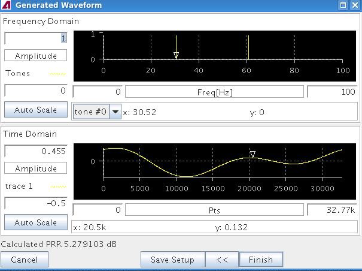

Viewing the Calculated Multitone Waveform
After the calculation of the multitone waveform, the Generated Waveform dialog window will display the waveform in both the frequency and the time domain. This allows you to check the result of your waveform definition.
The following figure shows the multitone waveform. The Linear Phase Shift Algorithm was used to generate the phase shifts of the individual tones.

In the above Generated Waveform dialog window, the zooming capabilities of the Time Domain display area were used to get a detailed view of the waveform shape.
As can be seen, for high frequencies close to Fs/2, such as Fs/4 (bin 2048) and Fs/8 (bin 1024) shown here, the resolution is limited. This is because with the resulting distance of sample points in the time domain, only a small number of points is available to represent one period of such frequencies. This number is n for a frequency Fs/n.
The dialog window also displays the PRR value of the calculated waveform below the waveform display.
If you are not satisfied with the waveform, you can use the << button to get back to the Multitone Generation dialog window where you can make the appropriate modifications.